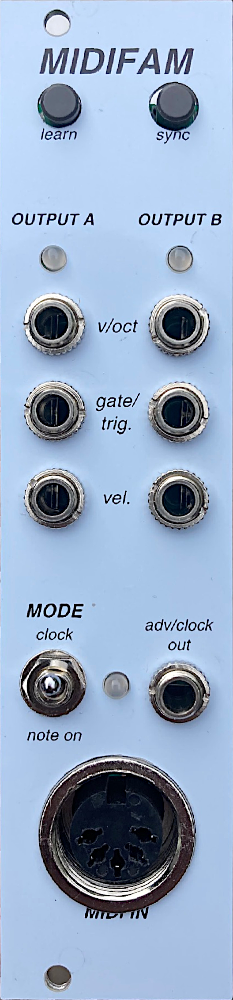

<style>
    body {
        width: 60%;
        max-width: 800px;
        margin: auto;
    }

    table {
        text-align: center;
    }

    th {
        font-size: larger;
    }

    td:nth-child(4) {
        min-width: 20em;
    }
    td:nth-child(3) {
        width: 15em;
    }
    td:nth-child(2), th:nth-child(2) {
        width: 12em;
        text-align: left;
    }
    td:nth-child(1), th:nth-child(1) {
        text-align: right;
        width: 4em;
    }
    
    ul, ol {
        overflow: hidden;
    }

    #panel-image-container {
        /* float: left;
        overflow: auto; */
        width: 120px;
        position: relative;
    }

    #panel-image-container img {
        /* padding-right: 2em; */
        width: 100%;
    }


    #panel-image-container div {
        opacity: 0.3;
        position: absolute;
        border-radius: 15px;;
    }
    div #cva {
        top: 19%;
        left: 4px;
        width: 40%;
        height: 180px;
        background-color: blue;
    }
    div #cvb {
        top: 19%;
        left: 57%;
        width: 40%;
        height: 180px;
        background-color: red;
    }
    div #dfam {
        bottom: 124px;
        right: 5px;
        width: 107px;
        height: 81px;
        background-color: green;
    }

    li p {
        padding: 0;
        margin: 0;
    }

    #panel-overview
    {
        display: block;
    }
</style>

<script src="https://rawcdn.githack.com/oscarmorrison/md-page/master/md-page.js"></script>
<noscript>

MIDIFAM User Manual
===================

The MIDIFAM module is two modules in one.

### **A dual MIDI-to-CV converter** with 16-bit DACs and a robust MIDI implementation including portamento, vibrato, legato, monophonic and duophonic modes, and more 

- **V/oct note output**
    - Converts MIDI note on messages to analog V/oct signals (MIDI channel is configurable)
    - Precision **16-bit DACs** cover the entire MIDI note range (nearly 11 octaves)
    - Bipolar output: C-1 (MIDI note 0) yields -3V, C9 (MIDI note 120) yields 7V
    - Implements MIDI portamento, vibrato, and more!
- **Trigger/Gate output**
    - 5V digital output, default is trigger (short pulse) for every MIDI note on
    - Trigger pulse duration can be configured using MIDI CCs
    - Gate output (high when note held, low otherwise) is available via MIDI CC
- **Velocity output**
    - MIDI Velocity for each note appears here as a voltage between 0 and 5V
    - **Note:** the Velocity output for converter B is re-used by "Note On" mode...
- **LED**
    - Gate/trigger indicator


### **A MIDI interface for the DFAM sequencer** which uses a single patch cable

- **Mode Switch** determines which MIDI messages will control the DFAM sequencer
    - **Clock** mode makes DFAM a MIDI sequencer that responds to MIDI Start, Stop, and Continue messages
    - **Note On** mode allows you to trigger individual steps of the DFAM sequence using a MIDI note mapping (and MIDI channel) of your choice
- **Adv/Clock output**
    - Connect this output to the *Adv/Clock* input of the DFAM's patchbay
    - DFAM sequencer will be under complete digital control

<div id="panel-image-container">
    
    <div id="cva"></div>
    <div id="cvb"></div>
    <div id="dfam"></div>
</div>

# MIDI Control of DFAM Sequencer

There are two modes of DFAM sequencer control determined by the *Mode* toggle switch. Control of the DFAM sequencer is handled entirely by the **MIDIFAM's *Adv/Clock* output**.

## ***Note On* Mode**

With the MIDIFAM's toggle switch set to *Note On* you can trigger any individual step of the DFAM sequencer with MIDI *Note On* messages. This gives you the freedom to **sequence the DFAM externally or control the DFAM's sequencer with a keyboard or arpeggiator**. Possibilites are unlimited.

The default MIDI channel assigned to the *Adv/Clock* output in *Note On* mode is MIDI channel 10, but this can be re-assigned to any MIDI channel. See the *MIDI Channel Preferences* section below for details.

## ***Clock* Mode**

Set the toggle switch to *Clock* to place the DFAM sequencer under the control of an external MIDI transport. The DFAM sequencer will run according to **MIDI Start, Stop, and Continue messages**, making the DFAM a MIDI-compliant sequencer (!). When the module receives a MIDI *Start* message, the DFAM sequencer will always begin playing from step 1. On MIDI *Continue* messages, the DFAM sequencer will begin from wherever it left off.

*Clock* mode also features a **clock divider/multiplier** which can be configured using MIDI Control Change messages (CC number 83). Multiply or divide the duration of a DFAM step by a value relative to the MIDI clock. 


# MIDI-to-CV Converters

explain blah blah todo todo todo...
- 16 bit dacs
- polyphony mode, explained below
- velocity output 

## Fun with MIDI

separate up and down slide
explain using it as a mult, for gate/trig
explain the different re-trig modes

## Mono vs Poly (Duophonic) Mode

explain 

# MIDI Implementation and Configuration

## MIDI Channel Preferences

Press the "Learn" button to set your MIDI channel preferences. The MIDIFAM has three MIDI channel assignments (one for each CV channel and one for the Adv/Clock output) and so there are three selections to make. The selections will be presented in the following order:

1. CV *A*
2. CV *B*
3. DFAM *Note On* mode

The LEDs will light to indicate which selection is currently active.

To make a MIDI channel selection, **send any Note On message on your chosen MIDI channel**. The module will detect the message and save the MIDI channel on which it was received.

When the selection has been made, the module will automatically advance to the next output and will await a new selection (i.e. any MIDI Note On message on any channel). **To skip to the next selection without changing channel preference, press the "Learn" button again.**

When you have updated (or skipped) all three channel preferences, the module will *store all current configuration* to persistent storage so that your preferences are saved even after power cycling. In addition to saving the MIDI channel selections, **all other settings will also be saved** (e.g. portamento, vibrato, polyphony, and any other configuration made using MIDI CC messages).

By default:
- CV output A receives on MIDI channel #1
- CV output B receives on MIDI channel #2
- DFAM *Note On* mode receives on MIDI channel #10

## DFAM Sequencer Keyboard Mapping

When the toggle switch is set to "Note On", the *Adv/Clock* output will trigger specific steps of the DFAM's sequencer when it receives Note On messages on its assigned MIDI channel. By default, the eight steps of the keystep are triggered by the eight notes of the C Major scale starting on Middle C (midi note number 60). Any note outside of this range will not trigger any 

In order to edit the keyboard mapping, you must **hold the learn button**. 

TODO TODO TODO ....


## Channel-specific CC messages

These will only apply when they are sent on the MIDI channel to which the CV output is assigned.

### **Portamento**

|CC | Function           | Values                         | Notes |
|---|--------------------|--------------------------------|-------|
|65  |   Enable or disable portamento | On/Off | |
|18	|   Time (desc.) | 0 to 2 sec | Duration of slides for descending notes |
|19	|   Time (asc.) | 0 to 2 sec |  Duration of slides for ascending notes |
|5	|   Time (master) | 0 to 2 sec | Master duration  |


### **Gate/Trig Behavior**

|CC | Function           | Values                         | Notes |
|---|--------------------|--------------------------------|--------- |
|16 | Trigger duration   | 1ms to about 50ms              | |
|80 | Retrigger behavior | Off, Highest, Lowest, Latest   | What note to re-trigger if any notes are still held when a Note Off message is received |
|81 | Gate/Trig mode     | Off, Trigger, Gate             | "Trigger" means a short pulse for every MIDI Note On. "Gate" means the output is high as long as a note is held. |


### **Vibrato**

|CC | Function       | Values                         | Notes|
|---|----------------|--------------------------------|-------------|
|76 | Rate           | 5 sec to 200 ms period    |  |
|77 | Depth          | 0 to 1 semitone           | What note to re-trigger if any notes are still held when a Note Off message is received|
|78 | Delay          | 0 to 3 seconds            | How long to wait before beginning the vibrato|

### **Pitch Bend**


|CC | Function       | Values                         | Notes|
|---|----------------|--------------------------------|-------------|
|17 | Pitch bend range           | 0 to 12 semitones   |  | 


### Global CC Messages


|CC | Function       | Values                         | Notes|
|---|----------------|--------------------------------|-------------|
|83 | Clock divider  | 1, 2, 3, 4, 6, 8, 12    | Default=4. When the toggle switch is set to "Clock", change the speed of the DFAM sequencer |
|126 | Mono Mode on  |                         | Each CV output is independent and operates as a single monophonic output |
|127 | Poly Mode on  |                         | Both CV outputs are combined for duophony |


# Appendix

## Firmware Update procedure

The module can receive firmware updates via the MIDI input on its front panel. You can download the ``.mid`` file containing the latest firmware from [no link](insert link todo). You will need a device capable of transmitting MIDI "System Exclusive" messages. The software update procedure is as follows:

1. Connect the output of your MIDI device to the MIDI input of the MIDIFAM
2. Power on the MIDIFAM **while holding down both push buttons**
3. All three LEDs will blink red three times indicating that the module has entered self-programming mode.
    - When the top two LEDs turn off and the **bottom LED is green, the module is ready to be updated**.
4. Play the ``.mid`` file
    - The MIDIFAM's bottom LED will blink green to indicate progress

When playback of the ``.mid`` file is complete, the module will restart and is ready for use. 


## V/oct Calibration Procedure

There are two channels of V/oct output and each is calibrated separately. Each output is calibrated with 11 calibration points. The first calibration point is -3V, final point is +7V, and the points are all spaced one volt (i.e. one octave) apart.

To begin the calibration procedure, **power the module on while holding the *Learn* button**.

- explain MIDI CCs
- explain LED blinks
- press Learn button to save and advance

<br><br><br><br><br><br>

<script>

document.querySelector("h1").style.display = "None";


</script>